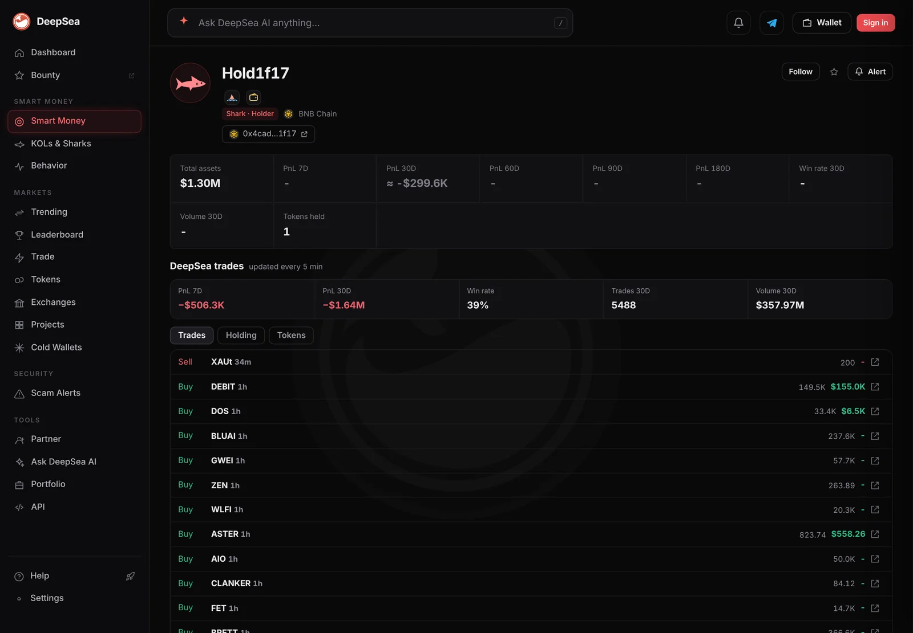

A shark lost $1.64 million on 5,488 trades in 30 days, then bought $155,000 of DEBIT
DeepSea's page for a shark wallet ending in 1f17 shows losses on BNB Chain, Ethereum and Optimism. On Sunday morning it kept trading: gold tokens out, small caps in.
Key points
- DeepSea's shark wallet Hold1f17 shows 5,488 trades and $357.97 million of volume in 30 days, a 39% win rate and a loss of $1.64 million, $506,300 of it in the last 7 days.
- BNB Chain did the most damage: minus $1.18 million over 30 days. Ethereum (minus $240,476) and Optimism (minus $232,955) followed; Base was the only chain in profit.
- About an hour before 6:40 a.m. ET on November 8, DeepSea logged it buying 149,500 DEBIT for $155,000 and 126,900 CYBER for $38,000. About 20 minutes before that read it sold 200 XAUt, worth about $811,000 at CoinGecko's price.
 What DeepSea's data shows
What DeepSea's data shows
DeepSea labels the wallet Hold1f17, a shark (a large trader) listed on BNB Chain with the address ending in 1f17. Its wallet page, read at about 6:40 a.m. ET on November 8, 2026, showed 5,488 trades and $357.97 million of volume in 30 days, a 39% win rate, and realized losses of $506,300 over 7 days and $1.64 million over 30 days.
DeepSea's realized PnL table (profit or loss on closed trades, 6:31 a.m. ET) splits the 30-day loss by chain: BNB Chain minus $1,182,472 (75 closed trades, 27 winners), Ethereum minus $240,476 (90 closed, 35 winners), Optimism minus $232,955 (10 closed, 3 winners) and Base plus $12,803. Those add up to minus $1.64 million, the same as the wallet page. The table marks only part of the trades as priced (40% on BNB Chain, 13% on Ethereum over 30 days), so the figure covers the trades DeepSea could value.
The page's headline total reads $1.30 million, but its holdings table also lists UNI worth $19.06 million and AAVE worth $10.23 million on Ethereum, plus smaller MANA and SAND positions; the $1.30 million is a single OP line listed on BNB Chain. We report both as DeepSea shows them.

Data: DeepSea (desea.io), checked November 8, 2026, 6:40 a.m. ET.
Sunday morning trades
The page's trade list, newest first, showed a sale of 200 XAUt (Tether's gold token) about 20 minutes before our read, with no dollar value. At CoinGecko's price of $4,054.64, that is about $811,000.
About an hour earlier it bought 149,500 DEBIT for $155,000 and 126,900 CYBER for $38,000, plus 2.16 billion SHIB for $9,600 and small amounts of WLFI, FET, AAVE and UNI. Two hours earlier it sold 500,000 BTW for $591,300 and 86 million JCT for $409,000. DeepSea's 24-hour table also shows it on Optimism, buying $52,691 and selling $137,696 in four trades.
Hold1f17 realized PnL by chain, 30 days
US$ thousand
Source: DeepSea realized PnL table, 6:31 a.m. ET, November 8, 2026.
How big the DEBIT buy was
DEBIT is the token of Teller, a lending protocol. CoinGecko priced it at $1.032 at 6:46 a.m. ET, up 14% in 24 hours but down 12.8% in a week, with a market value of $17.66 million and $9.61 million of 24-hour trading. The $155,000 buy equals about 1.6% of that day's trading. The price DeepSea logged, about $1.04 per token, matches CoinGecko. CYBER was down 6.5% on the day at $0.2869.

Why it matters
Nearly 5,500 trades in a month is about 180 a day, which points to automated trading. Volume of $357.97 million against a loss of $1.64 million means the wallet lost about 46 cents per $100 traded. DeepSea shows what the wallet did, not who runs it or why.
LC Insight analysis
This section is our reading of the facts above, not a statement of fact.
- We think the pattern, hundreds of trades a day across four chains, fits a trading bot more than a person picking coins. DeepSea does not say who controls it.
- The DEBIT buy is large for a $17.7 million token, so a wallet like this can move a small market on its own.
- Selling about $811,000 of gold tokens while buying small caps is a risk-on rotation on paper. With a 39% win rate, the record says such rotations have mostly lost money this month.
What's next
- Whether Hold1f17 sells the DEBIT within hours, as it has with other tokens
- Its 7-day profit and loss on DeepSea
- DEBIT's 24-hour volume on CoinGecko
Disclaimer. This article is based on public information and the sources listed below as of the update time shown. It is for information only and is not investment, legal or tax advice. Figures may change as companies and authorities publish new data.
Sources
- DeepSea, wallet page Hold1f17 (read November 8, 2026, about 6:40 a.m. ET)
- DeepSea, live realized PnL table (made November 8, 2026, 6:31 a.m. ET)
- DeepSea, live 24-hour shark aggregates (made November 8, 2026, 6:36 a.m. ET)
- CoinGecko, Teller (DEBIT) price, volume and market value (read November 8, 2026, 6:46 a.m. ET)
- CoinGecko, Tether Gold (XAUt) and CyberConnect (CYBER) prices (read November 8, 2026, 6:42 a.m. ET)